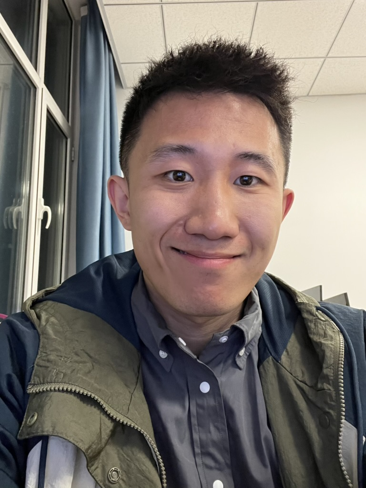

Huawei Technologies — 2012 Lab
LLM Associate Engineer Intern · Markham, Ontario
Research internship working on Lingxi-agent, a coding agent for repository-level issue resolution.

Current Computer Science PhD Student · University of Manitoba
I work on coding agents, self-evolving AI systems, and language models for software engineering.
Open to opportunities — especially Research Scientist and research-oriented roles in coding agents, LLMs, and AI for software engineering.
I am currently pursuing a PhD in Computer Science at the University of Manitoba and expect to graduate in 2027. I am advised by Prof. Shaowei Wang at the Mamba Lab. Before that, I received my MSc from Yanshan University, where I was advised by Prof. Zhen Chen at the Wantong Software Laboratory, and my bachelor’s degree from Dalian University of Technology.
My research focuses on building reliable and continually improving AI systems for real-world software engineering. I am particularly interested in coding agents, harness self-evolution, supervised fine-tuning, reinforcement learning, program analysis, and information retrieval. Alongside my PhD, I am an LLM Associate Engineer Intern at Huawei’s 2012 Lab, contributing to repository-level issue resolution agents.
I am currently open to job opportunities, particularly Research Scientist and other research-oriented positions involving coding agents, large language models, agent learning, or AI for software engineering.
Pengfei He, Jiayuan Zhou, Shaowei Wang, Ruiqi Pan
Under review, 2026 · SWE-bench Verified: 84.2%
Xu Yang, Jiayuan Zhou, Michael Pacheco, Wenhan Zhu, Pengfei He, Shaowei Wang, Kui Liu, Ruiqi Pan
ISSTA 2026 · SWE-bench Verified: 74.6%
Pengfei He, Shaowei Wang, Tse-Hsun (Peter) Chen, Muhammad Asaduzzaman
ACL 2026, Main Conference
Pengfei He, Shaowei Wang, Tse-Hsun (Peter) Chen
ACL 2026, Findings
Pengfei He, Shaowei Wang, Shaiful Chowdhury, Tse-Hsun (Peter) Chen
SANER 2025
Pengfei He, Linlin Liu, Dianlong You, Limin Shen, Zhen Chen
CSCWD 2023
Pengfei He, Wenchao Qi, Linlin Liu, Dianlong You, Limin Shen, Zhen Chen
UIC 2022
Pengfei He, Wenchao Qi, Xiaowei Liu, Linlin Liu, Dianlong You, Limin Shen, Zhen Chen
ChineseCSCW 2022
Yixi Wu, Pengfei He, Zehao Wang, Shaowei Wang, Yuan Tian, Tse-Hsun (Peter) Chen
arXiv:2409.15228
Zhen Chen, Maosheng Pan, Pengfei He, Wenchao Qi, Limin Shen, Dianlong You
Future Generation Computer Systems, 2022
Zhen Chen, Wenchao Qi, Pengfei He, Linlin Liu, Limin Shen
Journal of Electronics & Information Technology, 2023
LLM Associate Engineer Intern · Markham, Ontario
Research internship working on Lingxi-agent, a coding agent for repository-level issue resolution.
PhD Student in Computer Science · Mamba Lab
Advisor: Prof. Shaowei Wang · GPA: 3.88
MSc in Computer Science · Wantong Software Laboratory
Advisor: Prof. Zhen Chen · GPA: 89.84%
BEng in Process Equipment and Control Engineering
GPA: 81.70%